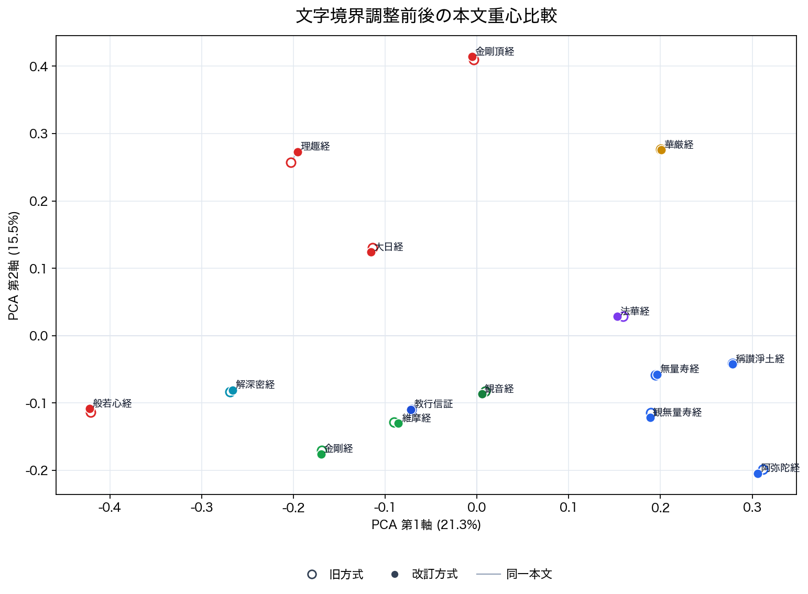

Errata: Unicode文字境界を保つチャンク化の採用
v1.0.0 の広域的な意味地図を差し替えるものではない。ただし旧方式では、トークン列を一定の長さで切ってから文字列に戻していたため、一部のチャンク（本文断片）で文字の途中が切れ、置換文字 U+FFFD が本文に入ることがあった。以後は、文字の途中で切らないようにチャンク境界を調整する改訂方式を基準とする。
比較方法
本論で用いた宗派別参照群 15 本文 / 433 チャンクを対象に、700 トークン幅・100 トークン重なりという条件を保ったまま、旧方式と改訂方式を比較した。旧方式は、トークン列を固定幅で切った後、その断片をそのまま文字列へ戻す。改訂方式は、元の本文中の文字位置とトークン位置の対応を確認し、開始位置と終了位置を Unicode 文字の境界に合わせてから本文断片を作る。これにより、文字の一部だけを切り出してしまうことを避ける。
U+FFFD が発生する理由は、tiktoken のトークンが Unicode 文字そのものではなく、UTF-8 バイト列を分割した単位であるためである。漢字などの1文字は複数バイトで表され、場合によっては複数トークンにまたがる。固定長のトークン断片だけを復号すると、断片の先頭または末尾が不完全な UTF-8 バイト列になり、復号時に置換文字 U+FFFD として現れることがある。
本コーパスでは、700 トークンに達した改訂方式チャンク 265 件の文字数中央値は 458 字であり、p10-p90 は 432-489 字であった。したがって、本稿の 700 トークン窓は、漢字を中心とする本文でおおむね 460 字前後に相当する。ここでの文字数は Python 文字列上の文字数であり、句読点や記号も含む。
100 トークン重なりにより、境界付近の本文は隣接チャンクにも部分的に含まれる。そのため、境界差の影響は本文重心や巻単位の集計では平均化されやすく、今回の大局的安定性を支える要因の一つと考えられる。ただし、この重なりはチャンク単位の1位参照源判定の揺れを完全に抑えるものではない。
技術注: 実装では tiktoken の offsets を用いてトークン位置を Python 文字列の文字位置へ対応させた。旧方式の再現確認では、v1.0.0 と同じ固定長トークン列の復号を用いた。
文字列品質
| 方式 | チャンク数 | 置換文字を含むチャンク | 置換文字数 | トークン数中央値 | トークン数平均 |
|---|---|---|---|---|---|
| 旧方式 | 433 | 256 | 326 | 700 | 692.935 |
| 改訂方式 | 433 | 0 | 0 | 700 | 692.679 |
数値評価
埋め込みモデルは text-embedding-3-large。旧方式の埋め込みは既存の埋め込みキャッシュを用い、改訂方式の本文断片だけを同じモデルで新規に埋め込んだ。公開成果物には、生本文やチャンク本文そのものは含めない。
| 比較対象 | 件数 | 最小 | p10 | 中央値 | 平均 | p90 | 最大 |
|---|---|---|---|---|---|---|---|
| 同一位置チャンク | 433 | 0.89001 | 0.966485 | 0.997813 | 0.98916 | 1 | 1 |
| 本文ごとの重心 | 15 | 0.995906 | 0.996709 | 0.998511 | 0.99809 | 0.998773 | 0.999538 |
| 宗派ごとの重心 | 11 | 0.997908 | 0.997908 | 0.998751 | 0.998713 | 0.999069 | 0.999086 |
同じ本文ごとに旧方式と改訂方式の重心を比較すると、最小値でも 0.995906 であり、全体として高い一致を示した。
| 本文 | ID | 旧方式/改訂方式の重心類似度 |
|---|---|---|
| 佛説阿彌陀經 | t0366_amida_sutra | 0.995906 |
| 大樂金剛不空眞實三麼耶經 | t0243_rishu_kyo | 0.996541 |
| 般若波羅蜜多心經 | t0251_heart_sutra | 0.996961 |
| 觀世音菩薩普門品 | t0262_kannon_chapter | 0.997215 |
| 妙法蓮華經 | t0262_lotus_sutra | 0.997908 |
| 稱讃淨土佛攝受經 | t0367_praise_pure_land | 0.998081 |
| 佛説觀無量壽佛經 | t0365_meditation_sutra | 0.998349 |
| 佛説無量壽經 | t0360_larger_sukhavati | 0.998511 |
| 金剛般若波羅蜜經 | t0235_diamond_sutra | 0.998672 |
| 大毘盧遮那成佛神變加持經 | t0848_maha_vairocana | 0.998693 |
| 大方廣佛華嚴經 | t0279_flower_garland | 0.998707 |
| 維摩詰所説經 | t0475_vimalakirti | 0.998728 |
| 解深密經 | t0676_samdhinirmocana | 0.998751 |
| 金剛頂一切如來眞實攝大乘現證大教王經 | t0865_vajrasekhara | 0.998787 |
| 顯淨土眞實教行證文類 | kyogyoshinsho | 0.999538 |
三層別の確認
ここでいう意味層は、ターゲットチャンクと参照源チャンクの埋め込み cosine に基づく参照源混合である。したがって、意味層の入れ替わりは埋め込み空間全体の崩れではなく、埋め込みを用いた局所的な参照源順位が境界処理差に反応したものとして読む。
三層参照源混合地図についても、旧方式と改訂方式を同じ条件で比較した。意味層の参照源混合では、チャンク単位の支配的参照源が 33 / 197 で入れ替わった。一方、巻別の支配的参照源は変化せず、文体・語彙層の入れ替わりは 1 / 197、典拠マーカー層は 0 / 197 であった。
| 層 | チャンク | 重みcos中央値 | L1平均 | 支配参照源の変化 | 巻別支配参照源の変化 |
|---|---|---|---|---|---|
| 意味層（参照源混合） | 197 | 0.992013 | 0.123899 | 33 / 197 | 0 / 7 |
| 文体・語彙層 | 197 | 1 | 0.000657 | 1 / 197 | 0 / 7 |
| 典拠マーカー層 | 197 | 1 | 0 | 0 / 197 | 0 / 7 |
典拠マーカー層では、マーカー検出チャンク数と総マーカー検出数も一致した。
| 指標 | 旧方式 | 改訂方式 |
|---|---|---|
| マーカー検出チャンク | 99 | 99 |
| 総マーカー検出数 | 170 | 170 |
| 検出ベクトル完全一致率 | 1 | |
| 検出ベクトルが変化したチャンク | 0 |

解釈
旧方式で発生した U+FFFD は、本文品質と再現性の問題として明確に避けるべきである。一方、同じ位置にあるチャンク同士の埋め込み類似度は平均 0.98916、中央値 0.997813 であり、本文ごとの重心と宗派ごとの重心も高い一致を示した。したがって、v1.0.0 の大局的な意味地図をただちに否定するものではない。
ただし、意味層の参照源混合は、チャンク単位の1位参照源判定において Unicode 境界処理の差に一定の感度を示した。これは、参照源候補同士が近い局所箇所では入力ノイズにより順位が入れ替わり得ることを示す。一方で、100 トークン重なりは境界付近の差異を隣接チャンクへ部分的に分散させ、本文重心や巻単位の傾向を安定させる方向に働いたと考えられる。巻別の支配的参照源、文体・語彙層、典拠マーカー層は大きく崩れなかった。三層に分けることにより、どの層が揺れ、どの層が安定しているかを分離して確認できた点も、本稿の方法上の利点である。
本文断片の表示、SAT 行範囲との対応、個別チャンク近傍、引用候補の精査では、旧方式を基準にしない。今後は、文字境界を保つ改訂方式を基準処理とする。